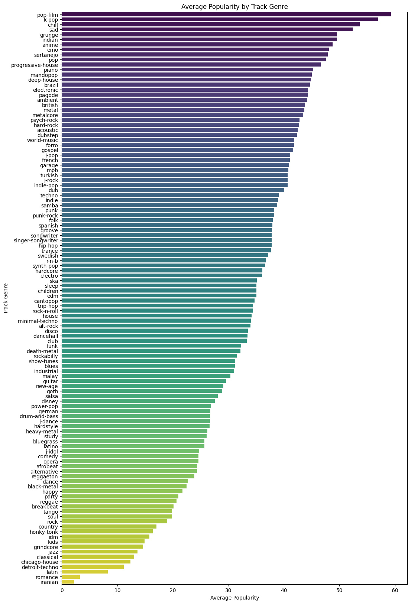

Project Overview
The goal of this project was to analyze a dataset of over 114,000 Spotify songs to identify the key factors that contribute to a song's popularity. I explored the relationships between a song's audio features (like danceability and energy), its genre, and its artist to uncover what makes a song a hit.
The dataset used in this project is Spotify Tracks Attributes and Popularity dataset from Kaggle.
Key Findings & Visualizations
Insight 1: Popularity is More Than Just Audio Features
At first glance, one might expect features like Danceability or Energy to strongly predict a song's success. However, the data tells a more nuanced story. While there are some expected relationships (e.g., a strong negative correlation between Energy and Acousticness), the most critical finding is that no single audio feature strongly correlates with Popularity.
Key Observations from the Correlation Map:
- Popularity's Weak Link: Popularity has only a weak positive correlation with Danceability and Energy.
- Expected Opposites: As anticipated, Energy and Acousticness are strongly negatively correlated.
- The Bigger Picture: This suggests that while audio features define a song's sound, they are not the primary drivers of its popularity. Factors like artist recognition, genre trends, and marketing likely play a much more significant role.
Insight 2: Genre is a powerful predictor of mainstream success.
Based on the analysis of average popularity by track genre, a significant variation exists across different music genres on Spotify. Genres such as "pop-film," "k-pop," "chill," "sad," and "grunge" exhibit notably higher average popularity. Conversely, genres like "iranian," "romance," "latin," "detroit-techno," and "chicago-house" show considerably lower average popularity. This indicates that track genre is a strong factor influencing a song's potential popularity.
Myth-Busting: What Doesn't Drive Popularity?
A key part of data analysis is not just finding what matters, but also confirming what doesn't. I investigated several common assumptions about what might make a song popular and found that many individual audio characteristics have a surprisingly minor impact. This reinforces the idea that a hit song is more than the sum of its parts.
Explicit Lyrics
Explicit songs show a slightly higher average popularity, but the difference is too small to be a major factor. A song's success isn't determined by its use of profanity.
Tempo (Pace)
Whether a song is categorized as Slow, Moderate, or Fast has no significant bearing on its popularity. High-tempo dance tracks are just as likely to be popular as slow ballads.
Loudness
While extremely quiet songs are less popular, once a track reaches a moderate or loud level, further increases in loudness do not correlate with higher popularity.
Musical Key (Mode)
Songs in a major key ("happy" sounding) are slightly more popular on average than those in a minor key ("sad" sounding), but the effect is minimal and not a reliable predictor of success.